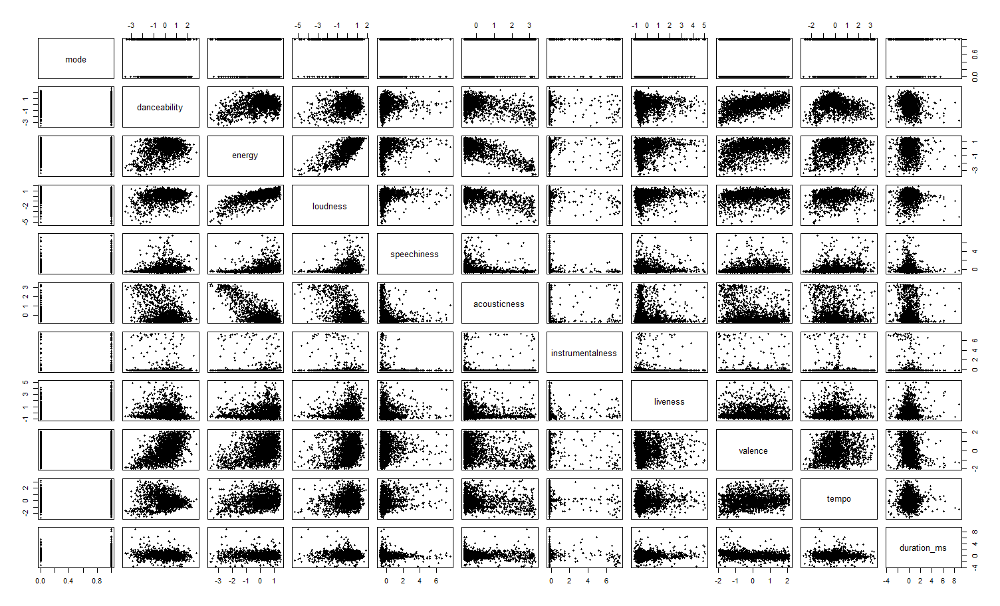

Data Preparation
To prepare the data to do this analysis, I first linked my Spotify account with a last.fm account using the last.fm plug-in for Spotify in September 2015. This allowed my streams from Spotify to be "scrobbled" and permanently stored in a historical record on my last.fm account. From there, I was able to pull my last.fm history down to my desktop to perform the analysis.
However, there can often be mismatches between the two data sources. Spotify is very good at re-routing to the correct observations with changes; this does not happen with last.fm accounts. Therefore, when a single release prior to an album re-routes to that album once the album is released on Spotify, it does not do that in last.fm. When artists are consistently changing album names due to cumulative albums (looking at you, The Chainsmokers), last.fm does not account for this. When an artist changes her name, such as Marina and the Diamonds shortening to just Marina, this is not accounted for in last.fm. Additionally, sometimes when the track is scrobbled on last.fm the featured artists are listed in the song title, and sometimes they are not.
To make a long story short (too late), there are a lot of manual changes that have to occur in the code to get the same songs with different title and artist combinations to map to the same song. For example, "Don't You Worry Child (Radio Edit) [feat. John Martin]", "Don't You Worry Child (Radio Edit)", and "Don't You Worry Child - Radio Edit" all had to be mapped to the same song name.
From there, I applied some additional filtering to my streams. For example, tracks played locally will not be recongnized by Spotify and need to be dropped. All comedy and podcasts were also dropped.
One final filter prior to analysis I put in was that I needed to have listened to the song at least five times. Sometimes when you listen to a new song on Spotify, even if you don't finish it, it will still count as a scrobbled track in last.fm. To only analyze tracks I actually listen to, I placed this five scrobbles minimum filter on there to remove tracks I may have played or partially played, but they are not part of my music catalogue that I currently or formerly listened to.
At this point, I had to do a little more manual adjusting in order to send a request to the Spotify server and correctly receive back a song's Spotify ID. I create a string that includes the artist name and song title with each word separated by a space, which is identified as "%20" in the curl request. However, some of these have to be manually overwritten because the curl request doesn't handle requests with apostrophes or featured artists in them well. Therefore, I have to remove words with apostrophes and featured artists' names.
At this point, I send each track to the Spotify server with a curl request and Spotify sends back the first result of its lookup. Think of it like typing my request into the seach bar on Spotify, and Spotify is sending me back the information for the first thing that it displays.
One final time, I need to do some manual overriding. The most prevalent mismatch at this point is for title tracks of albums. Since Spotify's lookup will display the most common track and album is part of its lookup method, a song like "Breakaway" - Kelly Clarkson from the album "Breakway" will send back the first result for that album, which is the most popular track on that album, "Since U Been Gone" - Kelly Clarkson. I identify most of these by ensuring there are no duplicates in the dataset. If there are, I determine which one is mapping incorrectly and manually overwrite it by hard-coding the ID, which can easily be identified as part of the song's Spotify URL.
Finally, I can send these IDs back to the Spotify server as a request for audio features on the track. Spotify's audio features include attributes such as mode, time signature, acousticness, danceability, energy, instrumentalness, liveness, loudness, speechiness, valence, and tempo that I can use to cluster the songs of my listening history.
Clustering
Using the attributes returned from Spotify for each track, I normalize each of the attributes and run a Principal Component Analysis (PCA). The reason I run a PCA prior to clustering is due to the fact that some of these variables are highly correlated. Loudness, energy, danceability, and tempo all tend to move together. Highly correlated variables are going to dominate a clustering. Running a PCA provides a set of new variables that are linearly uncorrelated. This works by selecting a first component that has the most variability, and then the second component has the most variability given that it's orthogonal to the first component and so on.
Below, you can see the correlation between some of the variables.

Below, you can see the resulting Principal Components and observe that these are uncorrelated, unlike the normalized Spotify attributes above.

With these new lineraly uncorrelated variables, I now run a k-means clusterings and compare the total within-cluster sum of squares. The total within-cluster sum of squares error will decrease as the number of clusters increases but with diminishing marginal returns. Looking at the plot of total within-cluster sum of squares error as clusters increase, I determine the trade off between error and number of clusters is fruitless after reaching eight clusters, where the reduction in error pretty much levels off. Therefore, I choose to use these eight clusters in my analysis.
Analysis
To perform the analysis, I first took the results of the clusters, determined each cluster's defining attribute(s), and assigned each a fitting name. From here, I re-attached the data back to the original dataset that included timestamps for each stream. I then took the timestamp and built a metric for the month and year combination, which could help me better visualize the data.
I then built a few different views in R to export to Tableau for further analysis. These included cluster streams across time, total song streams, total artist streams, and so on.
The results of this analysis can be found over on the Spotify Streaming History page.